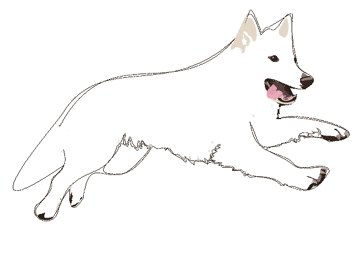
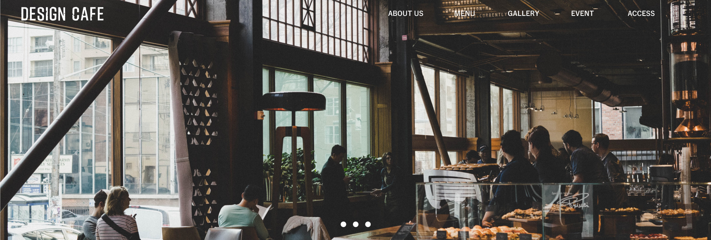

二七歳で転職を試みて面接を受けるも全滅
仕方なく自営業で始めたのが
今のメイン事業となっている不動産業
そこから今では複数の会社を経営するようになり
何でもやってみる事の大事さを勉強した
さらにチャレンジをしたいと思いを込めて
「前」という名のウェブサイト
これからも沢山の人と前へ進んでいきます
ポートフォリオ １

DESIGIN CAFEサイト
デザインカンプからHTML・CSSで作成
デザインカンプ作成1週間
コーディング2週間
ポートフォリオ ２

LIFESTYLE FIT
美容室10周年を想定したWEBサイトを構築
デザインカンプ作成1週間

バナー制作
デザインカンプ
デザインカンプ作成1週間

株式会社ユーティリティ・パートナーズ
不動産賃貸・売買仲介
不動産管理業
不動産買取
不動産コンサル
埼玉県川口市戸塚2-21-34-102号室
埼玉県知事（1）第23948号
048-229-4884

henrietta
ネイルサロン
埼玉県川口市戸塚2-20-1-305号室
前野 雄大
maeno yudai
小学校1年生から野球を始め、高校は二松学舎大学付属高等学校を卒業し
大学は東海大学北海道キャンパスで野球を続ける。
その後、オイシックス新潟アルビレックスで野球を続けるも24歳で引退。
野球を引退してからはエクステリア職人になり、その傍ら宅建を勉強し2
回目の試験で無事取得。宅建を持っていれば就職に困らないと聞いたが面
接は全て不合格。不動産業には興味があったので全くの未経験だったが思
い切って個人事業主で不動産業を開始する。独立1年目は最悪の状態だっ
たが2年目で何とか軌道が見えてきて法人化する。そこから2023年には
ネイルサロンと水道事業を始め、行き当たりばったりで過ごしている。
©︎ Maeno Yudai Web Site